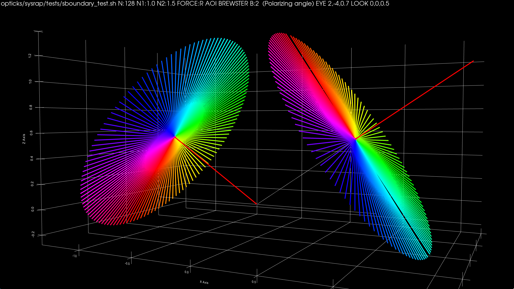
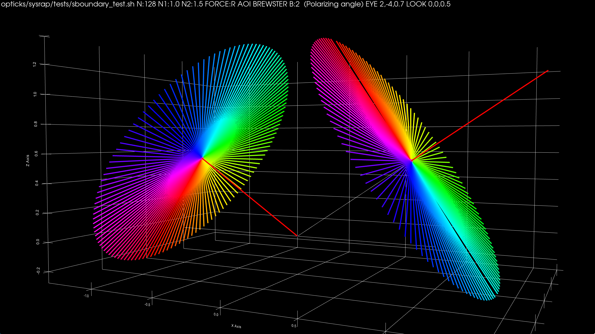
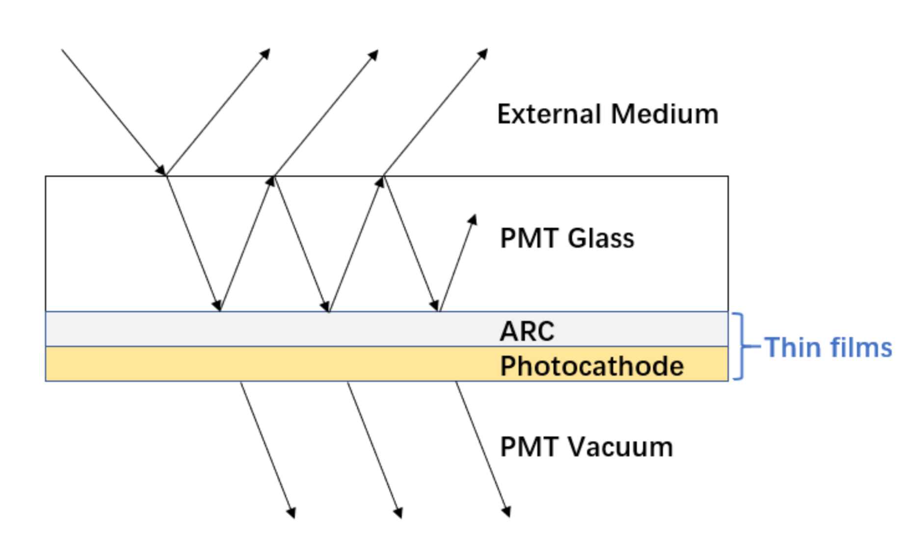

JUNOSW + Opticks : Status of Opticks Simulation
JUNOSW + Opticks : Status of Opticks Simulation
- (p1) Summary Timeline of JUNOSW PMT Simulation Development
- (p2) Issues : with FastSim based junoPMTOpticalModel
- Unnatural FastSim kludged PMT geometry : Pyrex+Pyrex+Vacuum+Vacuum (Natural: Pyrex+Vacuum)
- BUGS: polarization and propagation time within PMT were wrong
- MORE BUGS: unphysical mid-vacuum reflect, refract, absorb, detect, "tunneling" thru dynode/MCP
- (p10) FIX : adopting simple PMT geometry with custom C4OpBoundaryProcess
- Pivot to C4OpBoundaryProcess for PMT Optical Model (MR 180 : MERGED)
- C4OpBoundaryProcess::PostStepDoIt : 3-way (A,R,T) Customization with C4CustomART.h
- Low dependency access to PMT data from anywhere (MR 126 : MERGED)
- Custom4 : Custom Boundary Multi-Layer Thin Film (A,R,T) TMM Calc
- (p16) Validation of FIX : with Opticks full photon history recording, U4Recorder
- Geant4 + Opticks + NVIDIA OptiX 7 : Hybrid Workflow
- Opticks SEvt loaded into ipython : arrays detailing every photon point
- Insitu input photon tests (CPU only), Statistical photon history Chi2 comparison
- (p29) Extra : slow junoSD_PMT_v2::get_pmtid ~50us per hit candidate, alternative <1us with exact same results
- (p31) Opticks Geometry Update : Render performance scan : excluding volumes for each of 146 solids
- (p37) Opticks Extension for PMT Optical Model : using full PMT info on GPU
- CUDA equivalent of C4CustomART::doIt, (A,R,T) Comparisons from AOI scans : MATCHED
- (p43) Other Work : U4Tree/stree minimal Geometry translation, Mocking CUDA
- (p45) Next Steps : Validation with input photons (GPU vs CPU), standalone (FewPMT) then insitu tests
Simon C Blyth, IHEP, CAS — 22nd JUNO Collaboration Meeting, Kaiping, Software Review — 26 July 2023
JUNOSW + Opticks : Status of Opticks Simulation Talk
Despite the title, most of my recent work has been finding and fixing bugs with JUNOSW PMT simulation.
Clearly, need to fix bugs on the CPU before bringing the simulation to the GPU.
JUNOSW + Opticks : Summary Timeline of PMT Simulation Development
Opticks used to find JUNOSW bugs
- "simtrace" 2D geometry slice scans
- U4Recorder full photon history, analysis
- j/PMTSim : standalone FewPMT testing
Primary benefit : FAST DEV. CYCLE TESTS
2022 Aug-Sep : Fixed geometry issues: PMT, PMTMask overlaps
- 2022 Oct-Nov : MultiFilmSimSvc -> GPU/CPU Layr.h
- 2022 Dec : Standalone junoPMTOpticalModel tests:
- inappropriate FastSim : complex ModelTrigger, geom
- BUGS : reflect/refract polarization, propagation speed
- Demo C4OpBoundaryProcess "Custom4" fix
- opticks_20221220_FastSim_issues_and_fix.html
- 2023 Feb : junosw/-/merge_requests/126 MERGED : low dep. PMT data : PMTSimParamData
- PMT data => C4OpBoundaryProcess + Opticks SPMT/QPMT
- 2023 March : create Custom4 : https://github.com/simoncblyth/customgeant4/ (dep. of JUNOSW+Opticks)
- C4OpBoundaryProcess C4CustomART.h C4MultiLayrStack.h [Common CPU+GPU TMM complex math]
- 2023 April : opticks_20230428_More_junoPMTOpticalModel_issues_and_Validation_of_C4OpBoundaryProcess
- BUGS : unphysical mid-vacuum A,R,T,D + "tunneling" inside PMT
- 2023 May 25 : junosw/-/merge_requests/180 MERGED : Pivot to Simple Geometry + C4OpBoundaryProcess
- FIXES ABOVE BUGS : Above JUNOSW + Custom4 dev., enables below Opticks dev.
- 2023 June-July : Opticks SPMT.h QPMT.hh qpmt.h (uses C4MultiLayrStack.h) : CUDA equivalent of C4CustomART::doIt
- add smatsur.h enum to optical buffer, qsim::propagate enum branch => qsim:propagate_at_surface_CustomART
JUNOSW + Opticks : Summary Timeline of PMT Simulation Development Talk
- Here is the timeline.
- Above the line is mostly using Opticks to fix the PMT simulation on CPU.
- Below the line is extending Opticks to bring the PMT optical model to the GPU.
- Standalone PMT tests on CPU, revealed lots of bugs. I will describe the bugs and the fix. Which is already merged.
junoPMTOpticalModel Issues : All from using FastSim
Customized C4OpBoundaryProcess
- simple 2 volume (Pyrex+Vacuum) geometry
- standard G4OpBoundaryProcess reflect/refract/absorb/TIR
- much less code : reuse of standard Geant4
- easier Opticks on GPU : simpler, more standard
- no near-degenerate 1e-3 mm boundaries
- allows same geometry on CPU and GPU
- avoid history rewriting for comparisons
BUT : need to change very nasty Geant4 impl:
- G4OpBoundaryProcess::PostStepDoIt
- ugly monolith, rats nest of nested ifs
- Unpleasant to get familiar with
- Change palatable, using : C4CustomART.h
- Keep change separated, detailed validation vital
- Four volume PMT due to FastSim limitation
- Two volumes (Pyrex + Vacuum) would be natural
- Fake volumes yield many fake intersects
- Pyrex/Pyrex + Vacuum/Vacuum same material fakes
- complicates Geant4 step point history
- complicates comparison with Opticks
- Non-FastSim in PMT propagate at Pyrex(not Vac.) speed
- FastSim->SlowSim transition misses speed fixup
- reflected + refracted polarization incorrect
- should follow G4OpBoundaryProcess, depending on S/P
- ModelTrigger whereAmI BUG => Unphysical photons
- mid-vacuum A,R,T,D inside PMT
- "tunneling" through dynode/MCP
junoPMTOpticalModel Issues : All from using FastSim Talk
- Using FastSim required kludging the geometry with fake volumes to place a region around the photocathode
- It kinda worked, but looking closely there were lots of bugs.
- I fixed some of them, but the approach is not a good one.
Much better to pivot away from FastSim to using a custom boundary process.
That allows using natural geometry and makes it possible to use a much more standard approach, just changing the minimum.
FewPMT_demo0.png
Old unnatural 4 vol. PMT geometry, kludged for FastSim : HAMA and NNVT
FewPMT_demo0.png Talk
- This is the old unnatural PMT geometry with fake volumes to kludge the FastSim region.
- There are fake boundaries in the middle of the PMT vacuum, and also in the Pyrex.
FewPMT_demo.png
Natural 2 volume PMT geometry : HAMA and NNVT
FewPMT_demo.png Talk
The natural geometries are as simple as possible.
hamaLogicalPMTWrapLV_full_history.png
TO BT BT BT BT SR SR BT BR BR BT SR SR SR BT BR BT SR BT SA Lots of fakes
00 01 [02] 03 [04] 05 06 [07] 08 09 [10] 11 12 13 [14] 15 [16] 17 [18] 19 (7/20 Fake)
hamaLogicalPMTWrapLV_full_history.png Talk
- with the old kludged geometry there are fake step points in Geant4 histories.
- mid-vacuum fakes are obvious, there are also fakes inside the Pyrex, that are difficult to see
cxr_min__eye_0,1.5,0__zoom_1.2__tmin_1.0__ALL_maybe_box_too_small_ELV_t6,7.jpg
CSGOptiX/cxr_min.sh render : NNVT PMT with natural geometry
cxr_min__eye_0,1.5,0__zoom_1.2__tmin_1.0__ALL_maybe_box_too_small_ELV_t6,7.jpg Talk
Heres a ray trace render of the natural geometry.
Compare Reflected Polarization Impls for Brewster Angle Incidence
- opticks/src/master/sysrap/tests/sboundary_test.sh : build, run, plot
 

| G4OpBoundaryProcess/qsim.h/sboundary.h : Only S-polarized survives | junoPMTOpticalModel::Reflect : very different |
- incident from left (-X), surface normal vertically upwards (+Z), intersection point in middle,
- Colored lines represent polarization directions of 128 photons before and after Reflection
- Reflected using sboundary.h (validated against G4OpBoundaryProcess)
- Compared with sboundary.h:alt_pol that duplicates junoPMTOpticalModel::Reflect
Brewster (or polarizing) incident angle th1 : tan(th1) = n2/n1 ; th1 + th2 = pi/2
Compare Reflected Polarization Impls for Brewster Angle Incidence Talk
Another bug was not polarizing on reflection. The difference is very clear at the Brewster angle as illustrated here.
junoPMTOpticalModel::ModelTrigger BUG => Unphysical Photons
ModelTrigger whereAmI bug
+----------*----pmt-Pyrex----------------+ | | | | | +------*-------body-Pyrex----+ | | | +-----*-------inner1-Vac-+ | | | | | \ | | | | | | \ | | | | | | \ |-| | | | | \ |1e-3 | | | | \ | | | | | +~~vac/vac~~\~~~~~!~~~~~~+ | | | | | \ / \ | | | | | | \ / \ | | | | | | +--------*---+ \ | | | | | | | dynode/MCP | \ | | | | | | +------------+ \ | | | | | +-inner2-Vac------------*+ | | | +----------------------------+ | | | | | +----------------------------------------+
- dyn/MCP reflect => whereAmI:kInGlass
- -> unphysical mid Vacuum A/R/T/D
- "Undefined" G4VSolid::DistanceToIn
G4bool junoPMTOpticalModel::ModelTrigger(const G4FastTrack &fastTrack)
{ // GetVolume : CAUTION NEEDED AT BORDERS
...
if(fastTrack.GetPrimaryTrack()->GetVolume() == _inner2_phys){
return false;
} // SIMPLISTIC VIEW OF GEOMETRY
if(fastTrack.GetPrimaryTrack()->GetVolume() == _inner1_phys){
whereAmI = kInVacuum;
}else{
whereAmI = kInGlass;
// BUG: REFLECTION FROM dynode/MCP -> kInGlass
}
if(whereAmI == kInGlass){
dist1 = _inner1_solid->DistanceToIn(pos, dir);
dist2 = _inner2_solid->DistanceToIn(pos, dir);
// BUG: dist2 "Undefined" at reflect inside inner2
if(dist1 == kInfinity){ return false;
}else if(dist1>dist2){ return false;
}else{ return true;}
// BUG: depends on "Undefined" behaviour (+CSG constituents)
}else{
dist1 = _inner1_solid->DistanceToOut(pos, dir);
dist2 = _inner2_solid->DistanceToIn(pos, dir);
if(dist2 == kInfinity){ return true;}
// reliance on edge handling : not a good approach
}
return false;
}
Fix in junoPMTOpticalModel::ModelTriggerSimple_
- fixed FastSim impl. as needed something to validate against
junoPMTOpticalModel::ModelTrigger BUG => Unphysical Photons Talk
Another bug was from the FastSim ModelTrigger which didnt account for having photons reflect off things inside the PMT and resulted in unphysical behavior.
FewPMT_2942_Unphysical_cross_geometry_vac_reflect.png
FewPMT_2942_Unphysical_cross_geometry_vac_reflect.png Talk
This shows two examples of unphysical behavior:
- Tunneling through geometry
- mid-vacuum reflection
FIX: Pivot to C4OpBoundaryProcess for PMT Optical Model: MERGED
Custom Boundary POM
+---------------pmt-Pyrex----------------+ | | | | | | | +~inner~Vacuum~~~~~~~~~~~+ | | ! ! | | ! ! | | ! ! | | ! ! | | ! ! | | + + | | | | | | | | | | | | | | | | | | | | | | +------------------------+ | | | | | | | +----------------------------------------+
OpSurfaceName[0] == '@'
- local_z>0 : does MultiLayer ART calc
- !(local_z>0) : standard mirror_opsurf
Custom Boundary Process : Advantages
- natural geometry, no fakes
- standard Geant4 polarization, propagation, time
- less code, simpler code
- simpler Geant4 step history (no fakes)
- same geometry on GPU+CPU, easier Opticks validation
- half the geometry objects to model PMT (4->2)
| Old FastSim POM | 4 Solid, 4 LV, 4 PV |
| Custom Boundary POM | 2 Solid, 2 LV, 2 PV |
Disadvantages
- maintain Custom4 C4OpBoundaryProcess
- updating Geant4 needs care if G4OpBoundaryProcess changed
- Advantages far outweigh disadvantages
- MR 180 : MERGED May 25, 2023
FIX: Pivot to C4OpBoundaryProcess for PMT Optical Model: MERGED Talk
Using a custom boundary process provides a natural fix for the issues and enables using natural geometry with no kludging.
C4OpBoundaryProcess::PostStepDoIt : 3-way (A,R,T) Customization
PostStepDoIt type switch
if( m_custom_status == 'Y' ) // CustomART handling { G4double rand = G4UniformRand(); if ( rand < theAbsorption ) { DoAbsorption(); // A } else { DielectricDielectric(); // R or T } } else if (type == dielectric_metal) { DielectricMetal(); } ...
Standard DoAbsorption DielectricDielectric reused
G4OpBoundaryProcess unless OpticalSurfaceNam[0] == '@'/'#'
if( OpticalSurfaceName0 == '@' || OpticalSurfaceName0 == '#' )
{
if( m_custom_art->local_z(aTrack) < 0. ) // Lower hemi : Standard
{
m_custom_status = 'Z' ;
}
else if( OpticalSurfaceName0 == '@') // MultiFilm ART POM
{
m_custom_status = 'Y' ;
m_custom_art->doIt(aTrack, aStep) ;
type = dielectric_dielectric ;
theModel = glisur ;
theFinish = polished ;
}
else if( OpticalSurfaceName0 == '#' ) // Traditional POM
{
m_custom_status = '-' ;
type = dielectric_metal ;
theModel = glisur ;
theReflectivity = 0. ;
theTransmittance = 0. ;
theEfficiency = 1. ;
}
}
DielectricDielectric expects 2-way (theReflectivity,theTransmittance) => so C4CustomART.h rescales 3-way (A,R,T)
(theAbsorption,theReflectivity,theTransmittance) <= (A, R/(1-A), T/(1-A))
C4OpBoundaryProcess::PostStepDoIt : 3-way (A,R,T) Customization Talk
Customization only active for specially named surfaces
custom4/C4CustomART.h : include into C4OpBoundaryProcess.cc
C4CustomART customizations
doIt C4MultiLayrStack.h TMM calc, only for:
- OpticalSurfaceName[0]=='@' && local_z > 0
- -> Absorption, Transmittance, Reflectivity, Efficiency
- changed via references collected by ctor
reuse standard G4OpBoundaryProcess
- standard reflect, refract, absorb, detect
- standard polarization
- standard time, speed
- "inject" minimal change needed for POM
#include "C4IPMTAccessor.h"
#include "C4MultiLayrStack.h"
#include "C4Touchable.h"
struct C4CustomART {
const C4IPMTAccessor* accessor ;
G4double& theAbsorption ; // doIt sets these
G4double& theReflectivity ;
G4double& theTransmittance ;
G4double& theEfficiency ;
const G4ThreeVector& theGlobalPoint ;
const G4ThreeVector& OldMomentum ;
const G4ThreeVector& OldPolarization ;
const G4ThreeVector& theRecoveredNormal ;
const G4double& thePhotonMomentum ;
C4CustomART(
const C4IPMTAccessor* accessor,
G4double& theAbsorption,
G4double& theReflectivity,
G4double& theTransmittance,
G4double& theEfficiency,
const G4ThreeVector& theGlobalPoint,
const G4ThreeVector& OldMomentum,
const G4ThreeVector& OldPolarization,
const G4ThreeVector& theRecoveredNormal,
const G4double& thePhotonMomentum
);
double local_z( const G4Track& aTrack );
void doIt(const G4Track& aTrack, const G4Step& aStep );
};
https://github.com/simoncblyth/customgeant4/blob/main/C4CustomART.h
custom4/C4CustomART.h : include into C4OpBoundaryProcess.cc Talk
Most the customization is done in a Separate header, to minimize changes to the boundary process. This CustomART header includes another header with the TMM calculation.
Custom4 : Custom Boundary Multi-Layer Thin Film (A,R,T) TMM Calc
TMM : Transfer Matrix Method
multi-layer thin films, coherent calc:
- complex refractives indices, thicknesses
- => (A,R,T) (Absorb, Reflect, Transmit)
- Used from C4OpBoundaryProcess
header-only GPU/CPU : C4MultiLayrStack.h
- Custom4 depends only on Geant4
- Dependency of JUNOSW and Opticks
Custom4 : Custom Boundary Multi-Layer Thin Film (A,R,T) TMM Calc Talk
As the TMM calculation is needed both by JUNOSW on CPU and Opticks on GPU it is useful to organize it into a separate Custom4 package that both JUNOSW and Opticks depend on. This avoids circular dependency.
Low dependency access to PMT data from anywhere
Why Low Dependency Access ?
- REQUIRED, BY Custom4 + Opticks
- CODING BEST PRACTICE
- less deps -> more useful code
- test separate from the "monolith"
- development cycle < 1 s (vs minutes)
- serialization with NP.hh,NPFold.h
QE scan over 100 energy points, all PMTs
| IPMTSimParamSvc | 7.70 s |
| PMTSimParamData | 0.30 s |
| IPMTSimParamSvc/PMTSimParamData | 26.10 |
- exactly same results, 26x faster
| MR 126 MERGED Feb 3, 2023 |
Full PMT access from Custom4 + Opticks without Svc : How ?
- Add PMTSimParamData "core" to PMTSimParamSvc
- consistent by design from any source file/DB/Frontier/...
- Add PMTAccessor impl. of protocol base C4IPMTAccessor
- header only impl + serialization => PMT data anywhere
- => liberate PMT data from monolith
SimSvc/PMTSimParamSvc/PMTSimParamSvc/PMTAccessor.h
#include "C4IPMTAccessor.h"
struct PMTAccessor : public C4IPMTAccessor
{
PMTAccessor(const PMTSimParamData* data);
int get_num_lpmt() const ;
double get_pmtid_qe( int pmtid, double energy ) const ;
...Pure virtual protocol base : Custom4/C4IPMTAccessor.h
struct C4IPMTAccessor // only standard types in API
{
virtual int get_num_lpmt() const = 0 ;
virtual double get_pmtid_qe( int pmtid, double energy ) const = 0 ;
virtual double get_qescale( int pmtid ) const = 0 ;
...
Consistent PMT data access : JUNOSW + Opticks + Custom4
Low dependency access to PMT data from anywhere Talk
Using a pure virtual protocol struct allows JUNOSW to pass the PMT data to Opticks and Custom4. Combining that with Opticks serialization means that the PMT data can be used anywhere.
Opticks : Translates Entire Geometry + Simulation data into NPFold.h tree
NPFold.h : Contains sub-NPFold.h ...
- Tree of NP.hh arrays
- recursive data structure
- save into directory tree of .npy (optional)
- load from directory tree into C++ or python
persisting extremely useful:
- rsync across network => testing on laptop
- NPFold::Load into C++ for standalone tests
- np.load with NumPy for ipython debug, plots
- SSim/extra/jpmt/PMTSimParamData
- JUNO PMT info, without JUNOSW classes
epsilon:V1J009 blyth$ pwd /Users/blyth/.opticks/GEOM/V1J009 epsilon:V1J009 blyth$ find . -name '*.npy' ... ./CSGFoundry/node.npy ./CSGFoundry/itra.npy ./CSGFoundry/tran.npy ./CSGFoundry/inst.npy ./CSGFoundry/solid.npy ./CSGFoundry/prim.npy ./CSGFoundry/SSim/extra/jpmt/PMTParamData/pmtCat.npy ./CSGFoundry/SSim/extra/jpmt/PMTSimParamData/lpmtData.npy ./CSGFoundry/SSim/extra/jpmt/PMTSimParamData/pmtTotal.npy ./CSGFoundry/SSim/extra/jpmt/PMTSimParamData/pmtCat.npy ./CSGFoundry/SSim/extra/jpmt/PMTSimParamData/pmtCatVec.npy ./CSGFoundry/SSim/extra/jpmt/PMTSimParamData/pmtID.npy ./CSGFoundry/SSim/extra/jpmt/PMTSimParamData/spmtData.npy ./CSGFoundry/SSim/extra/jpmt/PMTSimParamData/qeScale.npy ./CSGFoundry/SSim/extra/jpmt/PMTSimParamData/lpmtCat.npy ./CSGFoundry/SSim/extra/jpmt/PMTSimParamData/MPT/000/PHC_KINDEX.npy ./CSGFoundry/SSim/extra/jpmt/PMTSimParamData/MPT/000/PHC_RINDEX.npy ./CSGFoundry/SSim/extra/jpmt/PMTSimParamData/MPT/000/ARC_KINDEX.npy ./CSGFoundry/SSim/extra/jpmt/PMTSimParamData/MPT/000/ARC_RINDEX.npy ... ./CSGFoundry/SSim/extra/jpmt/PMTSimParamData/QEshape/QEshape_NNVT_HiQE.npy ./CSGFoundry/SSim/extra/jpmt/PMTSimParamData/QEshape/QEshape_WP_PMT.npy ./CSGFoundry/SSim/extra/jpmt/PMTSimParamData/QEshape/QEshape_R12860.npy ./CSGFoundry/SSim/extra/jpmt/PMTSimParamData/QEshape/QEshape_NNVT.npy ./CSGFoundry/SSim/extra/jpmt/PMTSimParamData/QEshape/QEshape_HZC.npy ... ./CSGFoundry/SSim/extra/jpmt/PMT_RINDEX/PyrexRINDEX.npy ./CSGFoundry/SSim/extra/jpmt/PMT_RINDEX/VacuumRINDEX.npy ... ./CSGFoundry/SSim/stree/inst.npy ./CSGFoundry/SSim/stree/inst_f4.npy ./CSGFoundry/SSim/stree/inst_nidx.npy ./CSGFoundry/SSim/stree/standard/icdf.npy ./CSGFoundry/SSim/stree/standard/bd.npy ./CSGFoundry/SSim/stree/standard/bnd.npy ./CSGFoundry/SSim/stree/standard/sur.npy ./CSGFoundry/SSim/stree/standard/rayleigh.npy ./CSGFoundry/SSim/stree/standard/energy.npy ./CSGFoundry/SSim/stree/standard/wavelength.npy ./CSGFoundry/SSim/stree/standard/optical.npy ./CSGFoundry/SSim/stree/standard/mat.npy ./CSGFoundry/SSim/stree/digs.npy ./CSGFoundry/SSim/stree/mtname_no_rindex.npy ./CSGFoundry/SSim/stree/suindex.npy ./CSGFoundry/SSim/stree/subs_freq/val.npy ./CSGFoundry/SSim/stree/subs_freq/key.npy ./CSGFoundry/SSim/stree/implicit.npy ./CSGFoundry/SSim/stree/mtindex.npy ./CSGFoundry/SSim/stree/rem.npy ./CSGFoundry/SSim/stree/iinst.npy ./CSGFoundry/SSim/stree/w2m.npy ./CSGFoundry/SSim/stree/material/Pyrex/ABSLENGTH.npy ./CSGFoundry/SSim/stree/material/Pyrex/GROUPVEL.npy ./CSGFoundry/SSim/stree/material/Pyrex/RINDEX.npy ./CSGFoundry/SSim/stree/material/CDReflectorSteel/ABSLENGTH.npy ./CSGFoundry/SSim/stree/material/CDReflectorSteel/REFLECTIVITY.npy ./CSGFoundry/SSim/stree/material/AcrylicMask/ABSLENGTH.npy ...
Opticks : Translates Entire Geometry + Simulation data into NPFold.h tree Talk
Opticks translation serializes everything needed for the optical simulation, now including full PMT info. The entire geometry and simulation data is serialized into an NPFold data structure, which can be persisted into a directory of arrays.
Geant4 + Opticks + NVIDIA OptiX 7 : Hybrid Workflow
Geant4 + Opticks + NVIDIA OptiX 7 : Hybrid Workflow Talk
This is the Opticks workflow.
Geant4 + Opticks Instrumentation (no GPU usage)
U4Recorder : uses CPU Opticks to persist SEvt photons/histories/.. into NumPy .npy files for analysis
Geant4 + Opticks Instrumentation (no GPU usage) Talk
The CPU part of Opticks has machinery to collect and persist Geant4 photon histories into Opticks events. I validated the fix by comparing photon histories.
Opticks SEvt loaded into ipython : arrays detailing every photon point
In [3]: b Out[3]: b.base:/tmp/blyth/opticks/GEOM/V1J008/ntds2/ALL1/000 : b.genstep : (1, 6, 4) : 14:01:49.017610 : b.seq : (100000, 2, 2) : 13:59:54.715319 : b.pho0 : (100000, 4) : 14:01:40.913446 : b.record : (100000, 32, 4, 4) : 13:59:55.174871 : b.junoSD_PMT_v2 : (1,) : 14:01:44.544258 : b.sframe : (4, 4, 4) : 13:59:54.714881 : b.inphoton : (100000, 4, 4) : 14:01:44.544879 : b.pho : (100000, 4) : 14:01:42.596733 : b.flat : (100000, 64) : 14:01:49.018186 : b.prd : (100000, 32, 2, 4) : 14:01:26.149970 : b.photon : (100000, 4, 4) : 14:01:26.466269 : b.gs : (1, 4) : 14:01:49.017187 : b.aux : (100000, 32, 4, 4) : 14:01:49.191892 : b.tag : (100000, 4) : 13:59:54.705722
| array | shape | notes |
|---|---|---|
| inphoton | (n,4,4) | input photons |
| photon | (n,4,4) | final photon positions (at AB, SA, SD) |
| record | (n,32,4,4) | photon histories (up to 32 points) |
| seq | (n,2,2) | uint64 packed histories eg "TO BT BT SD" |
| aux | (n,32,4,4) | extra step point info eg A,R,T |
| sframe | (4,4,4) | target frame with M2W W2M transforms |
Opticks SEvt loaded into ipython : arrays detailing every photon point Talk
This is an Opticks event loaded into python as NumPy arrays. The record array holds up to 32 step points for each photon.
B_V1J008_N1_ip_MOI_Hama:0:1000_yy_target_frame.png
cd ~/j/ntds ; N=1 GLOBAL=1 MODE=3 ./ntds.sh ana ## interactive 3D pyvista
Target Frame Hama:0:1000
solidName:ordinalIdx:instanceIdx
B_V1J008_N1_ip_MOI_Hama:0:1000_yy_target_frame.png Talk
This is a pyvista 3D visualization of the photon history
B_V1J008_N1_ip_MOI_Hama:0:1000_yy_frame_close.png
Green : start position (100k input photons)
Red : end position, Cyan : other position
B_V1J008_N1_ip_MOI_Hama:0:1000_yy_frame_close.png Talk
The green line is the start position of input photons, the squares indicates the target frame.
Transform photon history points into target frame
NumPy transform all photon positions to target frame (eg Hama:0:1000)
- target frame m2w w2m transforms persisted within opticks/SEvt folder
w2m = evt.f.sframe.w2m # (4,4) : world-to-model gpos = b.f.record[:,:,0].copy() # (100000,32,4) : global (pos, time) gpos[...,3] = 1. # use 1. : to transform as position lpos = np.dot( gpos, w2m ) # (100000,32,4) : local (pos, 1)
Suitable : input photon shape, position, direction, target frame
- -> action mostly in plane -> 2D plotting (often clearer than 3D)
cd ~/j/ntds ; MODE=2 ./ntds.sh ana
Transform photon history points into target frame Talk
Transforming the 3D global positions into the target frame enables a 2D view.
A_V0J008_N0_ip_MOI_Hama:0:1000_a_no_skip_fake.png
cd ~/j/ntds ; N=0 ./ntds.sh ana
10k : Unnatural Pyrex+Pyrex+Vac+Vac PMT geometry, without : export U4Recorder__FAKES_SKIP=1
A_V0J008_N0_ip_MOI_Hama:0:1000_a_no_skip_fake.png Talk
Without fake skipping the fake intersects are visible
A_V0J008_N0_ip_MOI_Hama:0:1000_a.png
cd ~/j/ntds ; N=0 ./ntds.sh ana
10k : Unnatural Pyrex+Pyrex+Vac+Vac HAMA PMT geometry, with : export U4Recorder__FAKES_SKIP=1
A_V0J008_N0_ip_MOI_Hama:0:1000_a.png Talk
Fake skipping just doesnt record those points
B_V1J008_N1_ip_MOI_Hama:0:1000_b.png
cd ~/j/ntds ; N=1 ./ntds.sh ana
10k : Natural Pyrex+Vac HAMA PMT geometry, no fakes, no skipping needed
B_V1J008_N1_ip_MOI_Hama:0:1000_b.png Talk
Fake skipping enables the simulations to be compared
100k Input Photons targetting Hama:0:1000 Chi2 History Comparison
cd ~/j/ntds ; ./ntds.sh cf QCF qcf c2sum/c2n:c2per(C2CUT) 103.55/103:1.005 (30) np.c_[siq,_quo,siq,sabo2,sc2,sabo1][:25] ## A-B history frequency chi2 comparison [[' 0' 'TO BT BT BT BT SA ' ' 0' ' 37664 37569' 0.1200 ' 2 1'] [' 1' 'TO BT BT BT BT SD ' ' 1' ' 30711 30904' 0.6045 ' 4 2'] [' 2' 'TO BT BT BT BT BT SA ' ' 2' ' 12432 12470' 0.0580 ' 9199 8859'] [' 3' 'TO BT BT BT BT BT SR SA ' ' 3' ' 3824 3761' 0.5233 ' 11002 11014'] [' 4' 'TO BT BT BT BT BT SR SR SA ' ' 4' ' 1984 1967' 0.0731 ' 10886 10878'] [' 5' 'TO BT BT AB ' ' 5' ' 853 918' 2.3857 ' 8 27'] [' 6' 'TO BT BT BT BT BT SR SR SR SA ' ' 6' ' 583 609' 0.5671 ' 14779 14727'] [' 7' 'TO BT BT BT BT BR BT BT BT BT BT SA ' ' 7' ' 444 420' 0.6667 ' 1042 1016'] [' 8' 'TO BT BT BT BT BR BT BT BT BT BT BT AB ' ' 8' ' 435 430' 0.0289 ' 10280 7615'] [' 9' 'TO BT BT BT BT BR BT BT BT BT BT SD ' ' 9' ' 354 328' 0.9912 ' 5253 5256'] ['10' 'TO BT BT BT BT AB ' '10' ' 331 341' 0.1488 ' 84 143'] ['11' 'TO BT BT BT BT BT SR BR SA ' '11' ' 258 314' 5.4825 ' 33580 33573'] ['12' 'TO BT BT BR BT BT BT SA ' '12' ' 295 250' 3.7156 ' 0 3'] ['13' 'TO BT BT BT BR BT BT BT BT SA ' '13' ' 291 259' 1.8618 ' 213 192'] ['14' 'TO BT BT BT BT BR BT BT BT BT AB ' '14' ' 289 275' 0.3475 ' 8511 9213'] ['15' 'TO BT BT BT BT BR BT BT BT BT BT BT BT BT SA ' '15' ' 245 276' 1.8445 ' 9353 9360'] ['16' 'TO BT BT BT BT BR BT BT BT BT BT BT BT BT SD ' '16' ' 261 246' 0.4438 ' 9350 9416'] ['17' 'TO BT BT BT BT BT SR SR SR BR BT BT BT BT BT BT SA ' '17' ' 247 199' 5.1659 ' 15391 15388'] ['18' 'TO BT BT BT BT BT SR SR SR BR SA ' '18' ' 246 227' 0.7632 ' 14754 15177'] ['19' 'TO BT BT BT BT BT SR SR BT BT BT BT BT BT SA ' '19' ' 215 194' 1.0782 ' 26564 26588'] A,B counts Chi2 A,B 1st photon idx
https://github.com/simoncblyth/j/blob/main/ntds/ntds.sh
Chi2 comparison of photon histories for A:Unnatural(fakes skipped) B:Natural geometry
Any bug changing simulation histories -> huge Chi2 -> USEFUL METRIC
- BUT: does not catch all issues (eg time offsets)
100k Input Photons targetting Hama:0:1000 Chi2 History Comparison Talk
Chi2 shows the two simulations are consistent
- any large Chi2 contribitions : would point at bugs
B_V1J008_N1_OIPF_NNVT:0:1000_gridxy.png
export OPTICKS_INPUT_PHOTON=GridXY_X1000_Z1000_40k_f8.npy export OPTICKS_INPUT_PHOTON_FRAME=NNVT:0:1000 MODE=3 EDL=1 N=0 EYE=500,0,2300 CHECK=not_first ~/j/ntds/ntds.sh ana
Photon step points from grid of input photons target NNVT:0:1000 (POM:1)
B_V1J008_N1_OIPF_NNVT:0:1000_gridxy.png Talk
Can distinguish NNVT from HAMA by the size of ring inside
B_V1J008_N1_OIPF_NNVT:0:1000_POM0.png
POM=0 ntds2_cf ## Check No PMT Optical model
Photon step points from grid of input photons target NNVT:0:1000 (POM:0)
B_V1J008_N1_OIPF_NNVT:0:1000_POM0.png Talk
With a traditional PMT Optical Model, photons do not enter PMT
cxr_min__eye_1,0,5__zoom_2__tmin_0.5__NNVT:0:1000_demo.jpg
ray traced renders : exact same geometry "seen" by simulation
cxr_min__eye_1,0,5__zoom_2__tmin_0.5__NNVT:0:1000_demo.jpg Talk
This is a ray trace render targetting the same group of PMTs. You can see the same pattern of PMTs from the ray trace and from the simulation.
STAMP_ProcessHits_56us_Hama_0_0.png
STAMP_TT=257400,600 STAMP_ANNO=1 ~/j/ntds/stamp.sh ## inpho => Hama:0:0
(s0) beginPhoton (s1) finalPhoton ( ) pointPhoton (h0) ProcessHits[ (i0) ProcessHits] -- ProcessHits taking ~56us for SD
STAMP_ProcessHits_56us_Hama_0_0.png Talk
Looking at the pattern of time stamps in the simulation, I found "tail gaps" for hit candidates
Tail "gap" : junoSD_PMT_v2::get_pmtid : ~50us per hit candidate
"get_pmtid_fast" (~1us)
Only few SD volumes => use simpler approach :
const G4VTouchable* th =
track->GetTouchable();
int ID(-1) ;
ID = th->GetReplicaNumber(1);
if( ID <= 0)
ID = th->GetReplicaNumber(2);
- G4VTouchable::GetReplicaNumber(int depth)
- depth:0/1/2 : current/parent/grandparent
- tested : old_lpmt, new_lpmt, spmt, wpmt
- same pmtId result in ~1us (not ~50us)
int junoSD_PMT_v2::get_pmtid(G4Track* track) {
int ipmt= -1;
const G4VTouchable* touch= track->GetTouchable();
int nd= touch->GetHistoryDepth();
int id=0;
for (id=0; idGetVolume(id)==track->GetVolume()) {
int idid=1;
G4VPhysicalVolume* tmp_pv=NULL;
for (idid=1; idid < (nd-id); ++idid) {
tmp_pv = touch->GetVolume(id+idid);
G4LogicalVolume* mother_vol = tmp_pv->GetLogicalVolume();
G4LogicalVolume* daughter_vol = touch->GetVolume(id+idid-1)->
GetLogicalVolume();
int no_daugh = mother_vol -> GetNoDaughters();
if (no_daugh > 1) {
int count = 0;
for (int i=0; (count<2) &&(i < no_daugh); ++i) {
if (daughter_vol->GetName()
==mother_vol->GetDaughter(i)
->GetLogicalVolume()->GetName()) {
++count;
}
}
if (count > 1) break;
}
}
ipmt= touch->GetReplicaNumber(id+idid-1);
break;
}
}
return ipmt;
}
Looping over daughters at multiple levels and name matching to find copyNo : NO NEED FOR SUCH GENERALITY
Tail "gap" : junoSD_PMT_v2::get_pmtid : ~50us per hit candidate Talk
Moving positions of time stamp collection in the code, I isolated this method that gets the pmtid as the cause of the tail gaps. On the right is an alternative that gives the same results 50 times faster.
cxr_min__eye_-10,0,0__zoom_0.5__tmin_0.1__sChimneyAcrylic_increased_TMAX.jpg
ELV=t94,95 ./cxr_min.sh ## skip sTarget sAcrylic
cxr_min__eye_-10,0,0__zoom_0.5__tmin_0.1__sChimneyAcrylic_increased_TMAX.jpg Talk
As geometry is updated, I redid render checks. This render skips acrylic sphere and scintillator.
cxr_min__eye_-10,0,-30__zoom_0.5__tmin_0.1__sChimneyAcrylic_photon_eye_view.jpg
ELV=t94,95 ./cxr_min.sh ## skip sTarget sAcrylic : upwards view
cxr_min__eye_-10,0,-30__zoom_0.5__tmin_0.1__sChimneyAcrylic_photon_eye_view.jpg Talk
Here is an upwards view from inside the scintillator, looking towards the Chimney.
cxr_overview_emm_image_grid_overview
- Comparison of ray traced render times of different geometry
- simple way to find issues, eg over complex CSG, overlarge BBox
cxr_overview_emm_image_grid_overview Talk
A standard check I do after geometry updates is to compare ray trace rendering times to look for slow geometry.
cxr_view_emm_t0_elv_t142_eye_-1,-1,-1,1__zoom_1__tmin_0.4__sWaterTube_skip_sBottomRock.jpg
Render inside JUNO water buffer : PMTs, chimney, support sticks
cxr_view_emm_t0_elv_t142_eye_-1,-1,-1,1__zoom_1__tmin_0.4__sWaterTube_skip_sBottomRock.jpg Talk
Render from near the chimney
image_grid_elv_scan.jpg
Spot the differences : from volume exclusions
image_grid_elv_scan.jpg Talk
Varying volumes included and excluded allows sorting by render times so can find slow geometry.
cxr_overview.sh ELV scan 1080x1920 2M (NVIDIA TITAN RTX)
| idx | -e | time(s) | relative | enabled geometry description |
|---|---|---|---|---|
| 0 | t133 | 0.0077 | 0.9347 | EXCL: sReflectorInCD |
| 1 | t37 | 0.0079 | 0.9518 | EXCL: GLw1.bt08_bt09_FlangeI_Web_FlangeII |
| 2 | t74 | 0.0079 | 0.9616 | EXCL: GZ1.B06_07_FlangeI_Web_FlangeII |
| ... | ||||
| 35 | t | 0.0083 | 1.0000 | ALL |
| ... | ||||
| 141 | t50 | 0.0097 | 1.1750 | EXCL: GLb1.up01_FlangeI_Web_FlangeII |
| 142 | t39 | 0.0097 | 1.1751 | EXCL: GLw1.bt10_bt11_FlangeI_Web_FlangeII |
| 143 | t123 | 0.0097 | 1.1753 | EXCL: PMT_3inch_inner1_solid_ell_helper |
| 144 | t46 | 0.0097 | 1.1758 | EXCL: GLb1.up05_FlangeI_Web_FlangeII |
| 145 | t16 | 0.0102 | 1.2320 | EXCL: sExpRockBox |
Dynamic geometry : excluding volumes of each of 146 solids (after excluding slowest: solidXJfixture)
- time range : 0.0077->0.0102 s (~ +-20% )
- reproducibility ~+-10%
Small time range suggests no major geometry performance issues remain, after excluding slowest
- solids with deep CSG trees (eg solidXJfixture) can cause >2x slow downs
cxr_overview.sh ELV scan 1080x1920 2M (NVIDIA TITAN RTX) Talk
Heres the volumes sorted by render time. Varying the geometry changes the details of the acceleration structure. As the time range from fastest to slowest is small, can say there are no major geometry performance problems.
This is only the case after I excluded some problematic geometry.
CUDA equivalent of C4CustomART::doIt : With Full LPMT info
qsim::propagate_at_surface_CustomART
int qsim::propagate_at_surface_CustomART(
unsigned& flag, curandStateXORWOW& rng, sctx& ctx) const
{
const sphoton& p = ctx.p ;
const float3* nrm = (float3*)&ctx.prd->q0.f.x ;
int lpmtid = ctx.prd->identity(); //0->17611
float minus_cos_theta = dot(p.mom, *nrm);
float dot_pol_x_mom_nrm = dot(p.pol,cross(p.mom,*nrm));
// enables calc of S/P-polarization fraction
float ARTE[4] ;
pmt->get_lpmtid_ARTE(ARTE, lpmtid, p.wavelength,
minus_cos_theta, dot_pol_x_mom_nrm );
const float& A = ARTE[0]; // Absorb
const float& T = ARTE[2]; // Transmit (R+T=1)
const float& E = ARTE[3]; // Effic: _qe/A_norm
float u_A = curand_uniform(&rng);
int action = u_A < A ? BREAK : CONTINUE ;
if( action == BREAK ){
float u_E = curand_uniform(&rng) ;
flag = u_E < E ? SURFACE_DETECT : SURFACE_ABSORB ;
} else {
propagate_at_boundary( flag, rng, ctx, T );
}
return action ;
}
- JSW:PMTSimParamSvc
- fills PMTSimParamData from file/DB/frontier/...
- JSW:PMTSimParamData (added in MR 126)
- data "core" of PMTSimParamSvc
- JSW:_PMTSimParamData (added in MR 126)
- serialize PMTSimParamData into Opticks NPFold.h/NP.hh
- sysrap/SPMT.h
- _PMTSimParamData NPFold => summary arrays
- qudarap/QPMT.hh
- upload PMT summary arrays to GPU
- QProp.hh/qprop.h interpolation setup (RINDEX,KINDEX)
- instanciates qpmt.h instance and uploads
- qudarap/qpmt.h
- provides PMT info, TMM calc to qsim.h
- includes Custom4 : C4MultiLayrStack.h
- qpmt::get_lpmtid_ARTE
https://bitbucket.org/simoncblyth/opticks/src/master/qudarap/qpmt.h
CUDA equivalent of C4CustomART::doIt : With Full LPMT info Talk
CUDA code to implement PMT Optical Model straightforward, because it re-uses existing propagate_at_boundary just like on CPU can reuse Geant4 boundary process methods.
LayrTest__R12860_QPMT_Test.png
LayrTest__R12860_QPMT_Test.png Talk
ARTPlot : each of A, R, T have three versions from three pmt categories
- this shows Absorption, Reflection and Transmission probabilities which sum to 1 scanning across the full range of angles of incidences
- angles above 90 degrees correspond to reverse photons going from the vacuum to the pyrex
- there are lots of lines because S-polarized/P-polarized/Avg are shown
- also there are lines for each of three PMT catehories
LayrTest__R12860_Aspa.png
LayrTest__R12860_Aspa.png Talk
Aspa : This is just showing the absorption, the dotted lines are the average of the S and P polarizations
LayrTest__R12860_Rspa.png
LayrTest__R12860_Rspa.png Talk
Rspa : the reflection, which goes to 1. at grazing incidence
LayrTest__R12860_Tspa.png
LayrTest__R12860_Tspa.png Talk
Tspa : above the Critical angle there is no transmission, only absorption and reflection
Comparing AOI scans : j/Layr/LayrTest.sh
Shapes
In [6]: h.f.art.shape Out[6]: (9, 900, 4, 4) In [7]: h.f.comp.shape Out[7]: (9, 900, 1, 4, 4, 2)
CFLayrTest a : LayrTest : scan__R12860__cpu_thr_double b : LayrTest : scan__R12860__cpu_thr_float c : LayrTest : scan__R12860__gpu_thr_double d : LayrTest : scan__R12860__gpu_thr_float e : SPMT_test : sscan f : QPMTTest : qscan g : QPMT_MockTest : qscan h : QPMT_Test : qscan ## tab, rst = ts.cf_table(tt, pmtcat, excl=excl) # excl 0.05 ## rst +------------------------------+----------+----------+----------+----------+----------+----------+----------+----------+ | R12860 art\comp 0.05| a:ctd| b:ctf| c:gtd| d:gtf| e:| f:| g:| h:| +==============================+==========+==========+==========+==========+==========+==========+==========+==========+ | a:ctd| 0| 4.829e-05| 1.066e-14| 4.829e-05| 8.644e-05| 3.422e-05| 4.255e-05| 3.685e-05| +------------------------------+----------+----------+----------+----------+----------+----------+----------+----------+ | b:ctf| 9.317e-07| 0| 4.829e-05| 5.722e-06| 4.578e-05| 5.15e-05| 5.15e-05| 5.531e-05| +------------------------------+----------+----------+----------+----------+----------+----------+----------+----------+ | c:gtd| 1.582e-15| 9.317e-07| 0| 4.829e-05| 8.644e-05| 3.422e-05| 4.255e-05| 3.685e-05| +------------------------------+----------+----------+----------+----------+----------+----------+----------+----------+ | d:gtf| 7.958e-07| 8.792e-07| 7.958e-07| 0| 4.196e-05| 5.341e-05| 5.722e-05| 5.913e-05| +------------------------------+----------+----------+----------+----------+----------+----------+----------+----------+ | e:| 2.956e-06| 3.159e-06| 2.956e-06| 3.07e-06| 0| 5.341e-05| 5.15e-05| 4.959e-05| +------------------------------+----------+----------+----------+----------+----------+----------+----------+----------+ | f:| 3.094e-06| 3.338e-06| 3.094e-06| 3.159e-06| 1.192e-06| 0| 1.335e-05| 9.537e-06| +------------------------------+----------+----------+----------+----------+----------+----------+----------+----------+ | g:| 2.956e-06| 3.159e-06| 2.956e-06| 3.07e-06| 7.451e-07| 1.103e-06| 0| 7.629e-06| +------------------------------+----------+----------+----------+----------+----------+----------+----------+----------+ | h:| 2.907e-06| 3.248e-06| 2.907e-06| 2.921e-06| 7.451e-07| 8.941e-07| 8.419e-07| 0| +------------------------------+----------+----------+----------+----------+----------+----------+----------+----------+
Largest differences between ART (9, 900, 4, 4) from various tests (float,double,GPU,CPU,mock-CPU,standalone...)
Comparing AOI scans : j/Layr/LayrTest.sh Talk
Compare ART values from AOI scans from multiple tests, including on GPU and CPU and mock GPU shows expected levels of deviation..
Other Work : U4Tree/stree Minimal Geometry Translation
OLD : Extraneous full GGeo model
GGeo : Historical baggage from export/import era
+-------------------------------------+ | Geant4 ----> GGeo ----> CSGFoundry | | X4 CSG_GGeo | +-------------------------------------+
| Progress with adoption of minimal approach | |
|---|---|
| Aspect of translation | Status |
| structural factorization | MATCHED |
| instance transforms | MATCHED |
| standard CSG | MATCHED |
| material/surf/boundary NEW | MATCHED |
| CSG auto-uncoincidence | WIP |
| CSG tree balancing | WIP |
- CLOSE TO HUGE CODE REDUCTION
- ~6 pkgs, hundreds of classes/structs
- Opticks will more than half in size
| Geant4 -> U4Tree.h/stree.h -> CSGFoundry |
Minimal intermediate stree.h model (much less code)
- benefits of experience : eg n-ary tree serialization
| U4Tree | G4VPhysicalVolume -> stree/snode (n-ary tree) |
| U4Solid | G4VSolid -> scsg/snd (n-ary tree of constituent) |
| U4Material | G4Material -> NPFold/NP |
| U4Surface | G4LogicalSurface -> NPFold/NP |
|
Other Work : U4Tree/stree Minimal Geometry Translation Talk
Some other work on the geometry translation is getting close to concluding with a major reduction in Opticks code.
Other Work : Mocking CUDA : curand_uniform and tex2D
CUDA Mocking Benefits
Two simple overrides, NOW ENABLE:
test + debug most Opticks CUDA on CPU
qsim.h qprop.h qpmt.h qcerenkov.h [WIP] qscint.h [WIP]
|
|
// sysrap/s_mock_curand.h
struct curandStateXORWOW { ... };
typedef curandStateXORWOW curandState_t;
float curand_uniform(
curandState_t* state )
{ return state->generate_float() ;
}
// sysrap/s_mock_texture.h **NEW**
template<typename T>
T tex2D(cudaTextureObject_t tex,
float x, float y )
{
MockTextureManager* mgr =
MockTextureManager::Get() ;
return
mgr->tex2D<T>( tex, x, y );
}
Simple technique, proving useful, especially now PMT Optical Model on GPU
Other Work : Mocking CUDA : curand_uniform and tex2D Talk
Mocking just these two functions, allows most Opticks CUDA code to be tested on CPU. As GPU code getting more complicated that has proved useful.
Next Steps : CPU vs GPU validation : Now with full PMT Optical Model
Standard Tests
- Input photon
- Few PMT standalone
- Full geometry insitu
| Stat. photon history comparison |
| Random aligned, if needed |
- Scintillation + Cerenkov
- Few PMT standalone
- Full geometry insitu
| Stat. photon history comparison |
|
|
Next Steps : CPU vs GPU validation : Now with full PMT Optical Model Talk
Next steps : are to validate applying the same machinery used to check the PMT geometry pivot to compare between CPU and GPU simulations.
This comparison should be simpler, because the geometry is the same.
Further Steps : Performance, Production, Updates, Problem Geometry
- performance tests with different versions of NVIDIA OptiX, CUDA
- production constraints re: NVIDIA Driver versions ?
- Decide on minimum NVIDIA OptiX version to support (maybe 7.1 if Curves prove useful)
| July 2019 | June 2020 | Oct 2020 | Apr 2021 | Oct 2021 | June 2022 | Oct 2022 | Mar 2023 | |
|---|---|---|---|---|---|---|---|---|
| NVIDIA OptiX | 7.0.0 | 7.1.0 | 7.2.0 | 7.3.0 | 7.4.0 | 7.5.0 [1] | 7.6.0 [1] | 7.7.0 |
| Notes | NEW API | Added Curves | Specialization | Catmull-Rom | Debug, Sphere | More Curves | ||
| NVIDIA Driver | 435.12(435.21) | 450 | 455 | 465 | 495 | 515 | 520 | 530 |
| NVIDIA CUDA | 10.1 | 11.0 | 11.1 | 11.1 | 11.4 | 11.7 | 11.8 | 12.0 |
| gcc | 8.3.0 | ? | ? | ? | ? | ? | ? | ? |
Problem Geometry
- Deep CSG trees (XJFixtureConstruction) : test if "list-nodes" can avoid issue by tree height reduction
- Torus (Guide Tube) : NVIDIA OptiX 7.1+ adds Curves primitive : may give performant Torus intersect
[1] minor Opticks changes to support NVIDIA OptiX 7.5, 7.6 done already for Opticks users from Fermilab Geant4 group
Further Steps : Performance, Production, Updates, Problem Geometry Talk
If everything validates OK then the next steps are to work the practicalities of getting Opticks into production. Checking performance with different OptiX versions is needed.
Also there are some problem parts of the geometry, that are currently just skipped.
Summary and Links
Hidden Benefits of Adopting Opticks
- detailed photon instrumentation, validation
- comparisons find issues with both simulations:
- complex geometry, overlaps, bugs...
=> using Opticks improves CPU simulation too !!
Opticks : state-of-the-art GPU ray traced optical simulation integrated with Geant4. Migration to NVIDIA OptiX 7 complete. Full JUNO PMT Optical Model now on GPU.
- NVIDIA Ray Trace Performance continues rapid progress (2x each generation)
- any simulation limited by optical photons can benefit from Opticks
- more photon limited -> more overall speedup (99% -> 100x)
| https://bitbucket.org/simoncblyth/opticks | code repository |
| https://simoncblyth.bitbucket.io | presentations and videos |
| https://groups.io/g/opticks | forum/mailing list archive |
| email: opticks+subscribe@groups.io | subscribe to mailing list |
| simon.c.blyth@gmail.com | any questions |
Summary and Links Talk
Opticks brings state-of-the-art GPU ray tracing performance to optical photon simulations.
The detailed validations needed when adopting a new simulation has a hidden benefit in that detailed comparisons reveal problems with both simulations.
Opticks improves the CPU simulation as well as providing an on GPU simulation
Opticks Progress Summary
Geant4 + Opticks + NVIDIA OptiX 7 (GPU ray trace)
Full PMT Info on GPU
Geometry translated for GPU ray trace (no triangles)
JUNOSW : PMT FastSim => Custom Boundary Process
- FIXED BUGS : polarization, time, tunneling, unphys. A,R,T
- NOW : natural pyrex + vacuum PMT geometry
Opticks : Full JUNO PMT Optical Model on GPU
- same CPU/GPU TMM code shared by JUNOSW/Opticks
- CPU vs GPU validation ongoing
| https://bitbucket.org/simoncblyth/opticks/ |
Opticks Progress Summary Talk
This is a summary page : highlighting key points